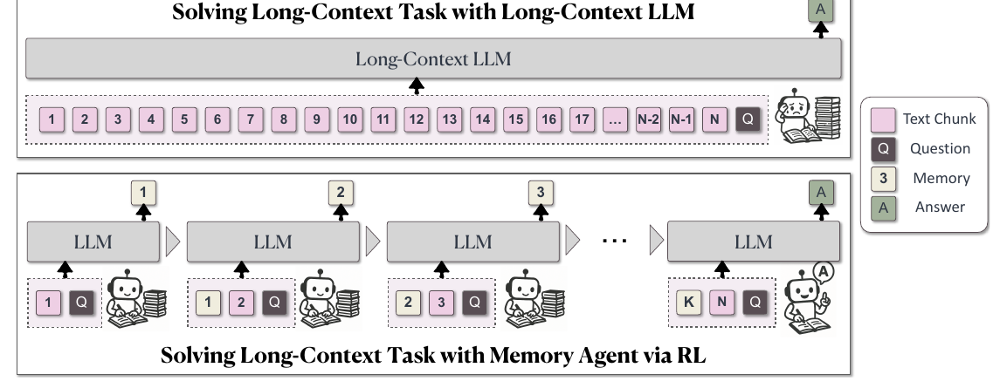
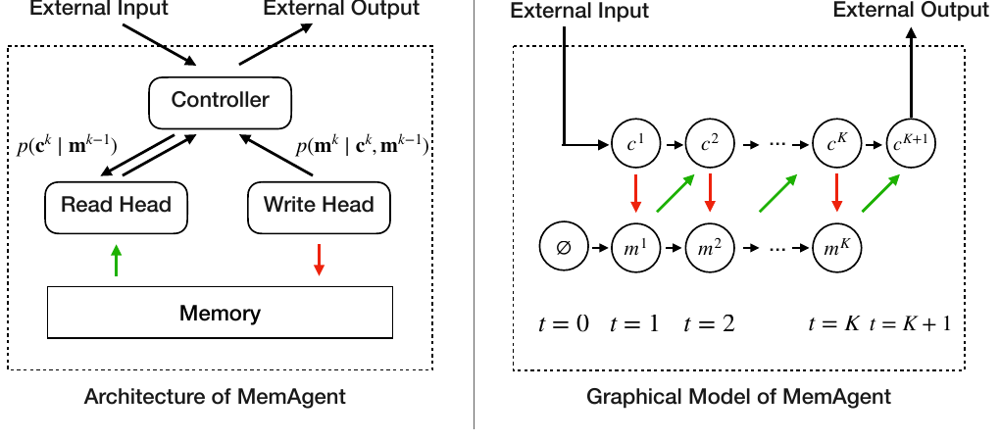

MemAgent 深度解读
这篇论文的关键设计不是继续扩展一次性上下文窗口，而是把超长输入改写成可训练的流式读写任务：LLM 每次只读一个 chunk，携带上一轮 memory，输出新的固定长度 memory，最后仅用问题和最终 memory 作答。
1. 设计思路：把长上下文问题改写成记忆代理问题
MemAgent 的出发点是：单纯扩大上下文窗口并不能保证模型在百万 token 级输入上稳定找到证据。论文把“读完整文档”拆成许多局部读写动作，让模型在固定窗口内持续维护一个任务相关 memory。
memory 不增长
旧 memory 被新 memory 覆盖，避免摘要无限追加导致窗口再次爆炸。
线性成本
每个 chunk 的计算近似固定，总成本随 chunk 数线性增长。
以最终答案塑造记忆
模型不是模仿人工摘要，而是通过 QA reward 学习哪些信息值得保留。
2. 论文原图框架：Figure 2 的五个关键部件

论文 Figure 2：上半部分是常规长上下文 LLM；下半部分是 MemAgent 分块读取、更新 memory、最终回答的框架。页面保留论文原图，并在关键部件上叠加解释热点。
3. 生成模型视角：读路径和写路径如何分解
论文 Figure 4 把 MemAgent 写成一个 latent memory variable 模型。设长文档被切成 \(c^1, ..., c^K\)，每步 memory 为 \(m^k\)。模型在第 k 步先读取 \(c^k\)，再根据 \(c^k\) 与 \(m^{k-1}\) 生成新的 \(m^k\)。

论文 Figure 4：左侧是 Controller / Read Head / Write Head / Memory 的概念架构，右侧是 chunk 与 latent memory 的图模型。
p(x_1:N) = sum_{m^{1:K-1}} product_k p(c^k | m^{k-1}) p(m^k | c^k, m^{k-1})Read path
读路径让当前 chunk 在上一轮 memory 条件下被处理，等价于“带着笔记读下一页”。
Write path
写路径生成下一轮 memory。这里的关键不是追加，而是覆盖，因此必须学会压缩与取舍。
4. Multi-Conv RL：为什么不是普通摘要训练
输入 problem、previous memory、当前 section，输出 updated memory。这个阶段可能重复很多轮。
读完整个 stream 后，输入 problem 与最终 memory，要求模型输出 boxed answer。
论文扩展 DAPO/GRPO，让一个长文档任务对应多个上下文独立的 conversation，而奖励仍由最终答案决定。
GRPO 中同一输入采样一组响应，用组内 reward 归一化优势，避免单独训练 value function。
5. 实验怎么读：不是窗口越长越强，而是 memory 是否稳定
| 问题 | 论文结果 | 设计含义 |
|---|---|---|
| 超长外推 | 摘要报告：在 32K 长度训练后外推到 3.5M QA，性能损失小于 5%。 | 模型没有在训练中见过 3.5M 上下文；能力来自流式复用同一个读写策略。 |
| Table 2 | RL-MemAgent-14B 在 3.5M 长度上为 78.12，RL-MemAgent-7B 为 71.09。 | 长输入不是一次性注意力可见，而是被压缩进最终 memory。 |
| RULER OOD | 摘要称在 512K RULER 上达到 95%+。 | 说明方法不是只对 HotpotQA 格式有效，但仍需看任务类型。 |
| 消融 | 论文 Figure 5 表明，仅加 memory 但没有 RL 时性能仍随长度下降。 | 固定 memory 结构只是容器，RL 才让模型学会如何写这个容器。 |
6. 工程启发与边界
适用
长文档 QA、长日志审计、百万 token 研究报告读取、必须在线性成本下处理连续输入的任务。
不适用或未覆盖
用户长期画像治理、可编辑记忆、敏感信息删除、多主体权限隔离。这些不是 MemAgent 论文的目标。
来源与核验边界
本页依据 arXiv:2507.02259 与项目页整理。实验数值仅引用论文摘要、Figure 1、Figure 5 与 Table 2 中出现的结果；未把“arbitrarily long”扩展为无限可靠推理。